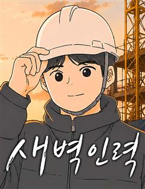

1초 같은 웹툰 추천

1초 · 시니 / 광운
1초 재밌게 봤다면 이 웹툰들도 좋아할 거예요. 같은 장르이면서 직업드라마, 성장드라마, 이능력 같은 요소가 겹치는 작품을, 겹치는 요소가 많은 순서로 20개 골랐어요.
2026-10-09 기준 · 네이버웹툰·카카오웹툰·레진코믹스 · 성인 작품 제외
내 취향으로 직접 골라 추천받기 →-
1
 네이버웹툰
네이버웹툰중증외상센터 : 외과의사 백강혁
초감각을 지닌 남자, 백강혁. 아버지를 잃은 후로 사상 최고의 외상 외과 의사를 목표로 사정 없이 달리기 시작한다. 그런데 이제 광기를 곁들인…… 187cm의 모델 같은 외모로 병원을 휩쓸고 다니는 그는 외상 외과 의사가 되기 위해 온 몸으로 환자들…
직업드라마성장드라마드라마네이버웹툰에서 보기 → -
2
 네이버웹툰
네이버웹툰상남자
오로지 성공만을 바라보며 기업 정점의 자리까지 오른, 최고의 샐러리맨 한유현. 대가로 사랑하던 모든 이를 잃어버린 후, 후회 섞인 인생을 돌아보는데... 어느 날 모든 기억을 안은 채, 젊은 시절의 그때로 돌아가게 된다. 모든 것의 시작점인 신입사원…
직업드라마청춘드라마네이버웹툰에서 보기 → · 상남자 같은 웹툰 → -
3
 네이버웹툰
네이버웹툰중대장은 실망했다
마흔 살이 넘은 중대장은 멋진 모습을 보이고 싶지만 요즘 애들, 요즘 군대는 왜 이렇게 변해버린 것일까! 참으로.. 중대장은 실망했다!
직업드라마성장드라마드라마네이버웹툰에서 보기 → -
4
 네이버웹툰
네이버웹툰도무지 그애는
생계를 위해 아르바이트 전선에 뛰어들었으나 계속 거절만 당한 무지는 지푸라기라도 잡는 심정으로 오! 해피마트 시식 아르바이트를 시작한다. 낯선 환경에 주눅이 들지만, 거칠었던 그 곳의 첫인상이 조금씩 바뀌어 가는데.. 세상을 배워가는 수많은 '그 애…
직업드라마청춘드라마네이버웹툰에서 보기 → -
5
 네이버웹툰
네이버웹툰여우놀이
평범하게만 살아온 박온유의 일상에 어느 날 찾아와 둘도 없는 베프가 된 ‘예쁜 애’ 신채리. 두 사람은 서울 최상위 학군의 명문 고등학교 상목고에 진학하게 된 후, 모든 10대들의 워너비 ‘상목고의 여우들’을 만나 아슬아슬한 여우놀이에 휘말리게 되는…
성장드라마청춘드라마네이버웹툰에서 보기 → · 여우놀이 같은 웹툰 → -
6
 네이버웹툰
네이버웹툰스쿨 오브 스트릿
천재 댄서이지만 무대 공포증을 지닌 혜은과, 초보 댄서이지만 무대를 두려워하지 않는 수현. 서로 다른 두 댄서의 스트릿 댄스 성장기!
성장드라마청춘드라마네이버웹툰에서 보기 → -
7

-
8
 네이버웹툰
네이버웹툰죽어 천국에 가다
고철수는 삶에 미련이 없다. 저승의 삶도 환생도 싫었다. 고철수는 완전한 죽음을 꿈꾼다. 자신의 존재가 완전히 사라지길 원했다. 하지만 그런 철수를 세상은 놓아주지 않는다.
성장드라마눈물샘자극드라마네이버웹툰에서 보기 → -
9
 네이버웹툰
네이버웹툰착한 여자 안선해
사람들이 생각하는 ‘착하다’는 무슨 뜻일까? 선해는 착하다는 말을 싫어한다. 어린 시절부터 사람들이 이유 없이 선해가 착하다고 말해왔기 때문이다. 착한 일을 한 적도 없는데 왜 그렇게 말하는 건지. 사람들의 세뇌 덕분에 선해는 직업도 사회복지사로 정…
성장드라마청춘드라마네이버웹툰에서 보기 → -
10
 네이버웹툰
네이버웹툰아직 제목 없음
친구 없음, 의욕 없음, 특기 없음. 상처 있음, 불만 있음, 결핍 있음. 학교 대표 아싸 천희와 준휘가 의기투합하여 동아리를 만든다. 하지만 이 동아리. "인싸는 출입금지입니다."
성장드라마청춘드라마네이버웹툰에서 보기 → -
11
 네이버웹툰
네이버웹툰설탕에 곁들인 로맨스
인생이 무(無)맛인 고등학생 찬희, 소꿉친구 소유의 도발(?)에 처음 잡아보는 도마와 식칼, 팬과 국자. 심심한 인생에 단 맛이 돌고 심장이 뛰기 시작한다! 근데 이 심장.. 소유한테 뛰는 거야? 요리가 즐거워서 뛰는 거야? 첫사랑과 꿈은 달달하게…
성장드라마청춘드라마네이버웹툰에서 보기 → -
12
 네이버웹툰
네이버웹툰대졸백수 400만 시대의 하여자들
눈 깜빡하니 끝나버린 대학생활. 20대 중반의 격변기를 지나며, 진로도 연애도 그 무엇 하나 순탄치 않다. 다소 부족하고 찌질한 우리지만, 언젠간 스스로 밥벌이를 해내는 멋진 사회인이 될 수 있을까? 불안감 속에서도 합격, 취업, 그리고 데뷔를 꿈꾸…
성장드라마청춘드라마네이버웹툰에서 보기 → -
13
 네이버웹툰
네이버웹툰누가 어른 되면 다 된댔어?
인턴부터 쭉 충성했더니 연봉 동결, 보람 없는 업무, 반복되는 야근! 결국 사표를 낸 재이는 오래 꿈꿔왔던 화가의 길로 들어서는데… 좋아서 시작한 일이지만 이 길은 멀고도 험하다. 의욕만 충만한 프리랜서, 인생의 노잼시기를 겪는 직장인 등… 나이만…
성장드라마청춘드라마네이버웹툰에서 보기 → -
14
 네이버웹툰
네이버웹툰A.I. 닥터
태화 그룹이 미래를 걸고 개발한 진단 목적 A.I. 바루다! 내과 레지던트 1년 차 이수혁은 바루다를 견학하던 중 원인 모를 폭발에 휘말려 정신을 잃고 만다. 그리고 다시 정신을 차렸을 때 그는 자신의 머릿속에 존재하는 A.I. 바루다를 마주한다.…
직업드라마드라마네이버웹툰에서 보기 → -
15
 네이버웹툰
네이버웹툰탑아이돌의 막내 멤버가 되었다
"25살…그거 아이돌은 못하는 나이잖아요." 유명 서바이벌 아이돌 오디션 '스타더스트 프로젝트'에서 탈락했던 도서한. 꿈에 미련은 못버리고 현실과 타협한 채 알바를 전전하는데…눈을 떠보니 8년 전으로 돌아왔다. 그것도 '스타더스트 프로젝트'를 시작하…
직업드라마드라마네이버웹툰에서 보기 → -
16

네이버웹툰새벽인력
꿈을 접은 채 하루하루를 버티며 살아가던 서른 중반의 청년 차유환. 생계를 위해 찾은 인력사무소에서 그는 낯선 사람들과 함께 새벽을 맞이한다. 거친 현장과 서툰 자신 사이에서, 유환은 조금씩 다시 살아가는 법을 배워간다.
직업드라마성장드라마드라마네이버웹툰에서 보기 → -
17
 카카오웹툰
카카오웹툰닥터 플레이어
왕의 사생아, 레이몬드. 사람들의 멸시로부터 도망쳐 치료사가 되지만, 결과는 F급 낙제 치료사라는 낙인뿐. 그러던 어느 날, 그에게 기적이 찾아온다. [플레이어로 각성하였습니다!] [직업 : 외과의사(SSS급)] 이 세계에 존재하지 않는 의학 지식을…
직업드라마드라마카카오웹툰에서 보기 → -
18
 네이버웹툰
네이버웹툰계속 써도 돈이 쌓임
청년 실업 100만 시대, 스펙 제로 백수 정진호. "너, 내 회사로 와라." 같은 게임의 길드 마스터였던 증권사 대표의 제안으로 얼떨결에 사회로 뛰어들게 된다! 그리고 그곳에서 발현된 정진호의 특별한 능력. 마우스 '딸깍' 한 번에 억 단위가 움직…
직업드라마드라마네이버웹툰에서 보기 → -
19
 카카오웹툰
카카오웹툰얼굴천재 0살 톱스타
하루만이라도 미남으로 살아보는 게 꿈이었던 조연배우 '이한조'는 선하게 살아온 삶에 대한 보상으로 아름다운 얼굴과 함께 소원을 들어주는 상태창과 환생한다. 비록 한겨울에 수녀원 앞에 버려진 천애고아 신세에 앞길이 막막하던 차에 재벌가 배우에게 입양되…
직업드라마드라마카카오웹툰에서 보기 → -
20
 네이버웹툰
네이버웹툰재벌의 품격
1990년대 대한민국을 대표했던 재경 그룹 회장 손중길. 눈을 감고 30년 뒤, 2022년 손자 손정훈의 몸으로 눈을 뜬다. 30년 전과 비교해 눈에 띄게 쇠퇴한 재경 그룹. 손중길은 자신이 일궈 낸 그룹을 다시금 정상에 올리려 한다.
직업드라마드라마네이버웹툰에서 보기 →